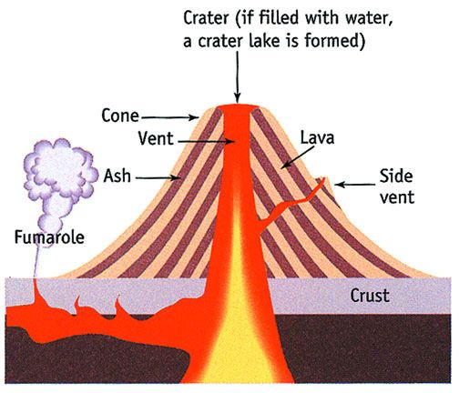
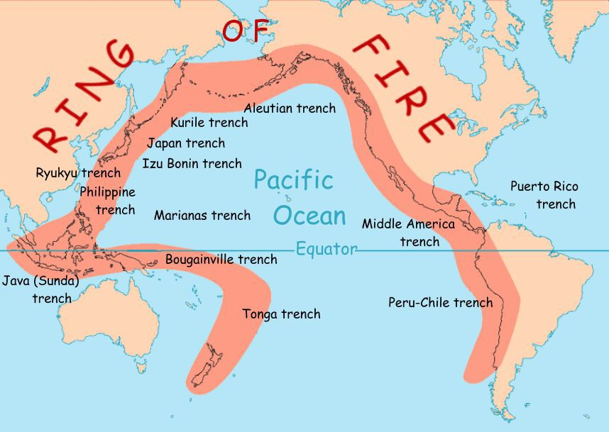
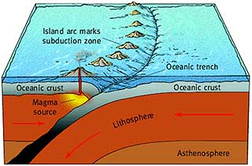
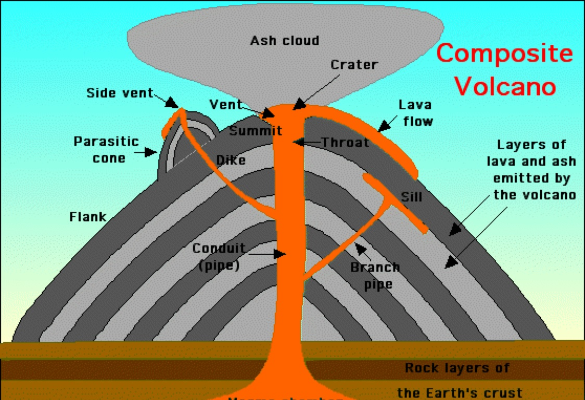

A volcano is a rupture in the crust of a planetary-mass object, such as Earth, that allows hot lava, volcanic ash, and gases to escape from a magma chamber below the surface. A volcano is a mountain that opens downward to a reservoir of molten rock below the surface of the earth. Unlike most mountains, which are pushed up from below, volcanoes are vents through which molten rock escapes to the earth’s surface. When pressure from gases within the molten rock becomes too great, an eruption occurs. Eruptions can be quiet or explosive asa the molten lava is at a very high tempature. There may be lava flows, flattened landscapes, poisonous gases, and flying rock and ash that can sometimes travel hundreds of miles downwind.
A volcano is a hole in Earth's surface through which magma (called lava when it reaches Earth's surface), hot gases, ash, and rock fragments escape from deep inside the planet. The word volcano also is used to describe the cone of erupted material (lava and ash) that builds up around the opening.An active volcano is a volcano that has had at least one eruption during the past 10,000 years. An active volcano might be erupting or dormant. An erupting volcano is an active volcano that is having an eruption. A dormant volcano is an active volcano that is not erupting, but supposed to erupt again.
Volcanoes are found along destructive (subducting) plate boundaries, constructive (divergent) plate boundaries and at hot spots in the earth's surface. The 'Ring of Fire' is a volcanic chain surrounding the Pacific Ocean.Most volcanoes occur near the edges of plates. When plates push together, one plate slides beneath the other. This is a subduction zone. When the plunging plate gets deep enough inside the mantle, some of the rock on the overlying plate melts and forms magma that can move upward and erupt at the Earth's surface.
Volanoes erupt because it is lighter than the solid rock around it, magma rises and collects in magma chambers. Eventually, some of the magma pushes through vents and fissures in the Earth's surface. Magma that has erupted is called lava.Some volcanoes erupt very often (and some like Kilauea almost never stop). On the other hand, some volcanoes are inactive for very long periods of time between eruptions. For example Mt. St. Helens erupted in the late 1800's and then again in 1980Volcanologists can predict eruptions—if they have a thorough understanding of a volcano's eruptive history, if they can install the proper instrumentation on a volcano well in advance of an eruption, and if they can continuously monitor and adequately interpret data coming from that equipment.
Magma rises through cracks or weaknesses in the Earth's crust. When this pressure is released, eg as a result of plate movement, magma explodes to the surface causing a volcanic eruption. The lava from the eruption cools to form new crust. Over time, after several eruptions, the rock builds up and a volcano forms.Volcanoes are formed when magma from within the Earth's upper mantle works its way to the surface. At the surface, it erupts to form lava flows and ash deposits. Over time as the volcano continues to erupt, it will get bigger and bigger.
